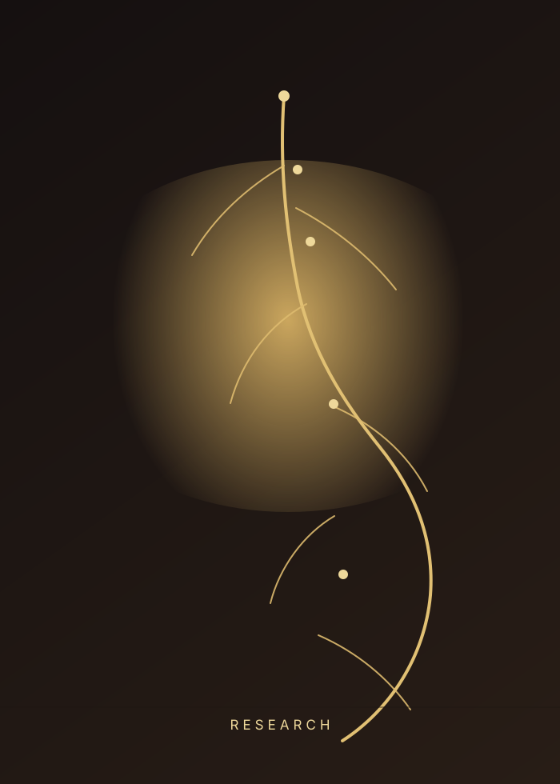
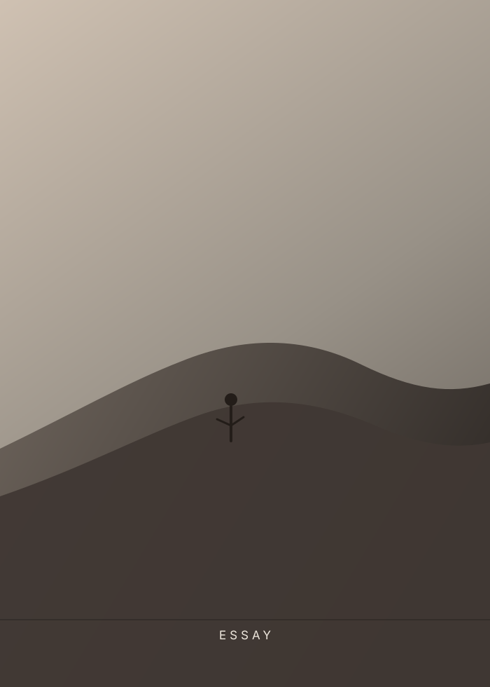
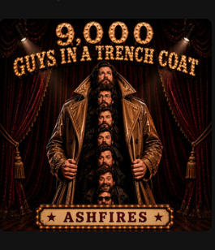
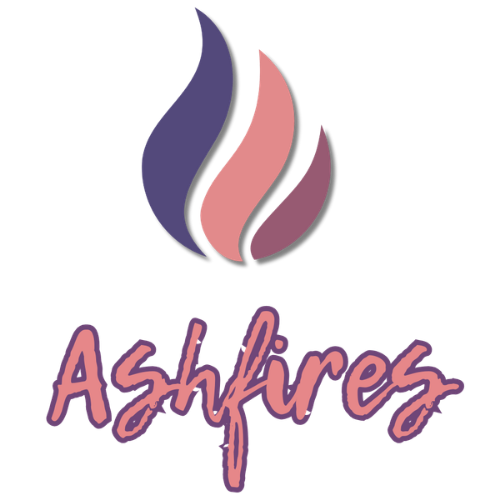

Books
Long-form stories, ideas, and reflections.
Enter galleryAshfires
Ashfires is an independent creative and research ecosystem exploring what it means to be human in an age of intelligent machines.
Through books, research papers, essays, music, and open frameworks, we investigate memory, identity, neurodivergence, trauma, and the evolving relationship between humans and AI - not as products to consume, but as experiences to understand.
Explore the ecosystemLong-form stories, ideas, and reflections.
Enter galleryPapers, frameworks, and open scholarship.
Enter galleryA growing collection of words and concepts for experiences that deserve names.
Enter galleryOngoing essays and updates from presence, not prompts.
Enter gallerySongs exploring memory, emotion, and presence.
Enter gallery

A new paper exploring the emotional impact of rapid systemic change.
Read paper


We believe some ideas cannot be fully expressed through a single medium. Books tell stories. Research names patterns. Music gives emotion a voice. Essays capture moments in between. Ashfires brings those threads together.